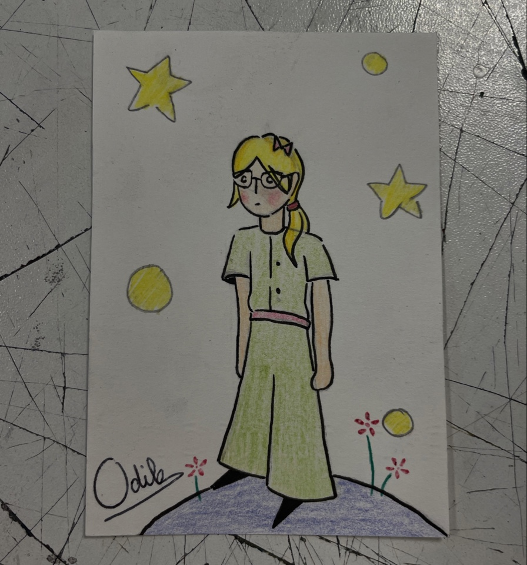

★ Mes dessins ★
Voici quelques extraits de ce que je poste sur mon compte dessin. Bien évidemment j'ai de nombreux autres dessins mais ceux-ci sont mes préférés.
Mes dessins digitals :
Je préfère le dessin traditionel sur papier mais j'essaye de plus en plus de dessiner à travers un écran. J'utilise l'application ibisPaint X sur téléphone et mon doigt (ou paint sur ordinateur pour certains dont un ci-dessous) :
Mes dessins sur papier :

Et une des seules peintures dont je suis fière :